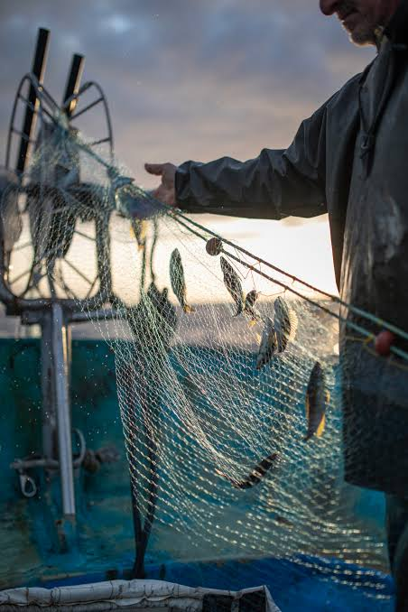

What is being done to protect our oceans
By paying close attention to the type of seafood you eat, you can help to revive our oceans and sustain it for generations to come.

Look for the Marine Stewardship Council (MSC) blue label for wild-caught seafood and the Aquaculture Stewardship Council (ASC) for farmed seafood.
Use trusted guides to check species, origins, and gear types:
Seafood Watch
and
Monterey Bay Aquarium
consumer recommendations, species ratings, and dining tools
Oceana
sustainable seafood guidance and contaminant considerations
Marine Conservation Society’s Good Fish Guide (UK) or
Sustainable Seafood Ireland for Irish/British Isles sourcing